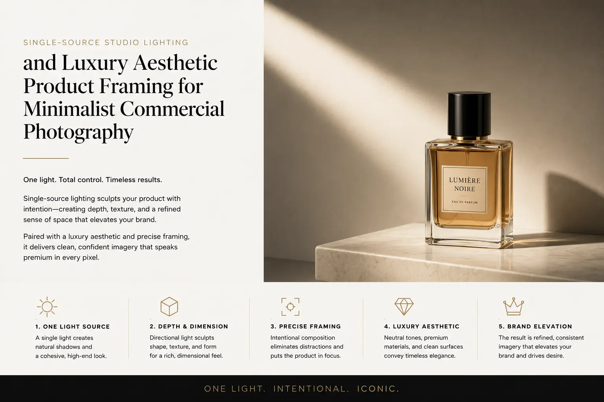
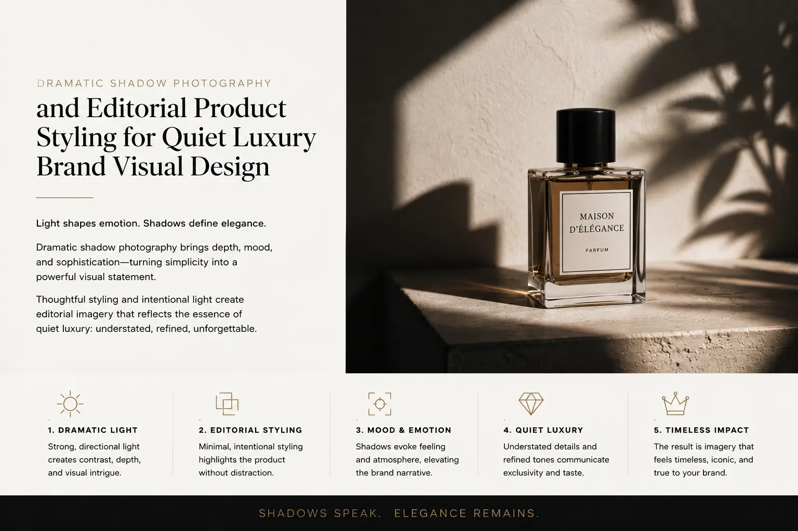

Why Clean Negative Space and Single-Source Lighting Win Modern Luxury Shoots
The Visual Paradox of Luxury: Less Communicates More
The instinct of most commercial photography is additive — add more light to eliminate shadows, add more props to create context, add more colour to create visual energy, fill every available inch of the frame with visual information that justifies the production investment. This instinct produces effective commercial imagery for mass-market brands where the communication objective is maximum information density in minimum viewing time.
For luxury brands, this instinct is precisely wrong. The visual language of luxury is subtractive — it removes rather than adds, simplifies rather than complicates, creates space rather than filling it. A product photographed against generous negative space, lit by a single carefully positioned source that sculpts the object with light and shadow, communicates a confidence and restraint that busy, multi-lit, prop-filled compositions cannot approach. The empty space does not waste the frame. It invests every pixel of the frame in the product's perceived value.
Minimalist commercial photography — the deliberate application of negative space, single-source lighting, and visual restraint to commercial product imagery — is not a stylistic preference. It is the visual translation of the fundamental luxury principle: that quality requires no justification, and confidence requires no decoration. The product that stands alone in clean space, revealed by a single coherent light source, is the product that communicates the purest possible version of its own worth.
The Psychology of Negative Space: Why Emptiness Creates Value
High-end negative space composition in luxury product photography operates through a set of psychological mechanisms that are as commercially powerful as they are visually elegant — and understanding these mechanisms is essential for any brand that wants its visual communication to signal premium positioning rather than mass-market accessibility.
The psychological principles at work in negative space composition:
- Spatial scarcity as a value signal. In retail environments, luxury is communicated through the generous allocation of physical space to individual products — a single watch displayed on a large velvet cushion, a single handbag placed on an expansive marble counter, a single bottle of fragrance occupying an entire shelf. This spatial generosity signals that the product is valuable enough to warrant the real estate it occupies — that the brand can afford to dedicate space to a single item rather than filling every available surface with merchandise. In luxury aesthetic product framing, negative space replicates this spatial scarcity signal on the two-dimensional plane of the image. The product surrounded by generous empty space is perceived as occupying premium visual real estate — and the viewer instinctively assigns higher value to it as a result.
- Attentional focus through visual isolation. When a product is surrounded by props, backgrounds, and environmental context, the viewer's attention is distributed across multiple visual elements — each competing for processing resources. When the same product is isolated in clean negative space, the viewer's entire attentional apparatus is focused on the product alone. Every detail of its form, surface, material, and design receives the viewer's full perceptual attention — producing a more detailed, more intimate, more complete experience of the product than any contextualised composition can achieve. For products where material quality, surface finish, and design precision are the primary value propositions — which describes nearly every luxury product category — this attentional concentration is the most commercially valuable visual strategy available.
- Breathing room as emotional calm. In the visually overwhelming environment of social media feeds, e-commerce platforms, and digital advertising — where every adjacent image is fighting for attention through visual intensity — an image with generous negative space creates an immediate emotional contrast. The viewer's visual system, processing dozens of dense, busy images per minute, encounters the calm of a clean, spacious composition and experiences a moment of relief. This emotional calm is not passivity — it is receptivity. The viewer who is not visually overwhelmed is a viewer who is open to engagement. And engagement, in a luxury context, begins with the willingness to look rather than scroll.
- Gallery association and fine-art positioning. Generous negative space is the compositional convention of fine art and gallery presentation — a single artwork on a large white wall, a single sculpture in an open gallery space. When fine-art catalog photography uses the same spatial conventions, the viewer subconsciously categorises the product image within the fine-art frame of reference rather than the commercial advertising frame — elevating its perceived cultural and aesthetic value. The product is not being sold; it is being presented. And the distinction between selling and presenting is the visual distinction between mass-market and luxury.
Instant Premium Positioning
Negative space and single-source lighting are the visual shorthand for luxury that the viewer's brain processes before conscious analysis begins. Within the first 200 milliseconds of viewing, the spatial and lighting conventions signal premium positioning — before the viewer has identified the product, read the brand name, or processed any text content.
Material and Detail Revelation
Single-source directional light reveals the three-dimensional form, surface texture, and material character of a product with a depth and specificity that flat, multi-source lighting eliminates. The gradient from highlight to shadow communicates weight, density, surface finish, and build quality — the physical attributes that justify premium pricing.
Timeless Visual Longevity
Minimalist compositions with clean negative space and single-source lighting do not date. While trend-driven visual styles become dated within 12–18 months, the restraint of minimalist luxury photography remains visually current indefinitely — protecting the brand's investment in visual assets from the depreciation of visual fashion.
Cross-Platform Visual Integrity
Clean compositions with generous negative space maintain their visual integrity across every platform and format — from a full-screen desktop product page to a mobile social media thumbnail. The simplicity of the composition ensures that the product remains the visual focus regardless of display size, resolution, or surrounding interface elements.

Single-Source Studio Lighting: The Technical Discipline of Visual Luxury
Single-source studio lighting is the lighting approach that defines the visual character of modern luxury photography — a discipline that requires greater skill and more precise control than multi-light setups, because a single light source leaves no room for mediocrity. Every surface, every shadow, every gradient is the product of one light's interaction with the subject, and any imperfection in position, angle, intensity, or modification is immediately visible in the final image.
The technical principles of single-source lighting for luxury product photography:
- Light position determines the product's visual narrative. The angle and height of the single light source relative to the product determines which surfaces are illuminated, which fall into shadow, and which exist in the transitional gradient between — and these decisions are not technical choices but narrative ones. A light positioned at 45 degrees to the product's front-left creates the classic portrait-style lighting that reveals form and texture while maintaining a natural, familiar quality. A light positioned at 90 degrees (side lighting) creates maximum drama and texture revelation — emphasising surface detail and three-dimensional form through deep shadow. A light from directly behind or slightly above-behind (rim lighting) creates a luminous edge that separates the product from the background and gives it an almost otherworldly glow. Each position tells a different visual story about the product, and the editorial product styling decision begins with which story the brand wants to tell.
- Light modification controls the emotional register. The quality of the single light source — whether it is hard (direct) or soft (diffused) — determines the emotional character of the image. Hard light from an unmodified source creates sharp, defined shadows with crisp edges — producing images with a dramatic, high-contrast character that communicates precision, sharpness, and a certain visual severity. Soft light from a diffused source (softbox, scrim, bounce) creates gradual shadow transitions with soft edges — producing images with a gentle, dimensional quality that communicates warmth, approachability, and tactile softness. For dramatic shadow photography, the choice between hard and soft light is the choice between intensity and intimacy — both are luxury-appropriate, but they communicate fundamentally different brand personalities.
- Shadow as compositional element, not technical flaw. In conventional multi-light product photography, shadows are treated as problems to be solved — filled with secondary lights until they disappear. In single-source luxury photography, shadows are treated as compositional elements of equal importance to the illuminated areas. The shadow cast by a product — its shape, its density, its edge quality, its direction — becomes part of the image's visual design. A long shadow stretching across a clean surface creates a sense of depth, time, and physical presence that shadow-free photography cannot produce. The shadow proves the product exists in three-dimensional space. And that spatial proof is the foundation of the tangible, physical presence that luxury photography aims to communicate.
- The role of the fill side: controlled darkness. In a single-source setup, the side of the product opposite the light source receives no direct illumination — it falls into shadow that may range from subtle to near-black, depending on the distance of the light, the reflectivity of the surrounding environment, and whether any bounce or fill is used. Controlling the depth of this shadow — how dark the fill side is allowed to become — is one of the most critical decisions in minimalist commercial photography. Deep, rich shadows with minimal fill create maximum drama and sculptural dimensionality. Gentler shadows with subtle ambient fill create a more accessible, more detailed result that reveals form without the intensity of full-drama lighting. The fill level is the volume control for the image's emotional intensity.
Luxury Aesthetic Product Framing: The Compositional Rules
Luxury aesthetic product framing follows compositional principles that are distinct from standard commercial product photography — rules that prioritise visual elegance, spatial harmony, and the product's relationship to the empty space around it over the informational completeness that standard catalog photography prioritises.
The compositional rules for luxury product framing:
- The product occupies one-third or less of the frame. Where standard product photography fills the frame with the product — maximising the product's visual size within the available space — luxury product framing deliberately reduces the product's frame occupancy, typically to between one-quarter and one-third of the total image area. The remaining two-thirds to three-quarters is negative space — clean, uninterrupted, and tonally cohesive. This spatial ratio is the single most immediately recognisable visual marker of luxury positioning, and it is the ratio that brands resistant to "wasting" frame space must learn to trust if they want their visual communication to read as premium.
- Asymmetric placement for visual tension. Rather than centring the product in the frame — which produces a static, democratic composition — luxury product framing typically places the product according to a modified rule of thirds or golden ratio placement, creating an asymmetric composition that introduces visual tension and dynamism. The offset placement creates a directional energy — the viewer's eye moves from the negative space toward the product, or from the product outward into the negative space — producing an active visual experience rather than a passive, centred presentation.
- Horizon line and surface plane as the only environmental reference. Fine-art catalog photography in the luxury tradition typically provides only the minimum environmental reference needed to ground the product in physical space — a surface plane (the surface the product rests on) and a horizon line (the junction between the surface and the background). This minimal environmental context gives the product a sense of physical presence and spatial reality without introducing environmental narrative that would compete with the product itself. The surface and background are typically tonally similar — both belonging to the same neutral palette — so that the environmental context does not distract from the product.
- The product's shadow as a compositional partner. In single-source luxury photography, the product's cast shadow is treated as a deliberate compositional element — planned, positioned, and controlled with the same attention as the product itself. The shadow's direction, length, and density are determined by the light position, and the composition is designed to incorporate the shadow as a visual partner that extends the product's presence into the negative space. A well-designed shadow in a luxury composition does not clutter the negative space — it activates it, creating visual interest within the empty area while maintaining the clean spatial character that negative space provides.
Quiet Luxury Brand Visual Design: The Aesthetic Movement
Quiet luxury brand visual design is the visual expression of a broader cultural and commercial movement — the shift from conspicuous luxury (visible branding, recognisable design markers, overt status signaling) to inconspicuous luxury (quality materials, refined craftsmanship, understated elegance recognised only by those with the knowledge and taste to recognise it). For brands positioning themselves within this quiet luxury space, the visual communication must embody the same principles of restraint, confidence, and understatement that the products themselves represent.
The visual design principles of quiet luxury brand photography:
Colour Palette
- Neutral, desaturated tones: warm greys, soft ivories, muted taupes, deep charcoals, natural stone tones
- Avoidance of primary colours, bright saturated tones, or metallic effects that signal conspicuous luxury
- Colour temperature consistency: warm or cool throughout, never mixed, creating a cohesive tonal environment
- Product colour as the only saturated element in the frame, drawing the eye naturally without visual competition
Surface and Material
- Natural, tactile surfaces: raw linen, unfinished wood, matte stone, handmade paper, raw concrete
- Avoidance of glossy, reflective, or synthetic surfaces that signal commercial rather than artisanal production
- Texture as visual content: the surface the product rests on contributes its own material quality to the image
- Material authenticity: genuine materials rather than printed or simulated alternatives
Typography and Branding
- Minimal text overlay: the image communicates without explanation, requiring little or no supporting text
- Branding through visual quality rather than logo prominence: the image quality itself is the brand marker
- If text is present: lightweight serif or sans-serif typography in neutral tones, generously letterspaced
- Logo placement: small, peripheral, and tonally integrated with the image rather than overlaid as a contrasting element

Dramatic Shadow Photography: Mastering the Light-to-Dark Gradient
Dramatic shadow photography for luxury products is the practice of using the full tonal range of the image — from pure highlight through mid-tones to deep shadow — as a deliberate visual tool that communicates the product's three-dimensional form, material quality, and emotional character. This is not the elimination of shadow that standard commercial photography pursues; it is the elevation of shadow to the status of a primary visual element.
The shadow techniques that define modern luxury product photography:
- Chiaroscuro: the Renaissance principle applied to product photography. Chiaroscuro — the strong contrast between light and dark that defines the work of Caravaggio, Rembrandt, and Vermeer — is the visual principle most directly applicable to dramatic shadow photography for luxury products. The technique uses a single dominant light source to create deep, sculptural shadows that define form and create a sense of visual depth and three-dimensional presence. When applied to product photography, chiaroscuro transforms a commercial object into a visual object of contemplation — the viewer does not just see the product; they study it, drawn into the interplay of light and shadow that reveals its physical character.
- Gradient mapping: controlling the tonal journey. In single-source luxury photography, the tonal gradient across the product's surface — the smooth transition from fully illuminated highlight through mid-tone to deep shadow — is the primary vehicle for communicating form and material quality. A smooth, continuous gradient communicates curved surfaces, organic forms, and soft materials. A sharp, abrupt gradient communicates angular geometry, hard edges, and engineered precision. The gradient's character is controlled through the size and distance of the light source relative to the product, and through the product's own surface reflectivity — and managing these variables to produce the specific gradient character that matches the product's identity is the central technical skill of single-source studio lighting for luxury work.
- Negative fill: deepening shadows intentionally. While standard photography uses fill cards and reflectors to bounce light into shadow areas and reduce contrast, luxury dramatic shadow photography often uses negative fill — black cards, black fabric, or dark surfaces positioned on the shadow side of the product to absorb rather than reflect ambient light, actively deepening the shadows beyond their natural depth. This technique produces the rich, dense, velvet-quality shadows that are characteristic of high-end luxury photography — shadows that feel substantial and present rather than simply absent, contributing their own visual weight and density to the image.
- Edge light separation without secondary sources. One of the technical challenges of single-source lighting is maintaining product separation from the background — particularly when the product and background share similar tonal values. Rather than adding a secondary light source (which would compromise the single-source visual coherence), luxury photographers use surface positioning and background material selection to create natural edge separation: a dark product placed against a slightly lighter background, or a light product against a slightly darker background, with the single source positioned to create a natural rim of highlight along the product's edge that separates it from the environment.
Editorial Product Styling: The Art of Visual Restraint
Editorial product styling for luxury shoots applies the editorial conventions of high-end fashion and design publications — where styling decisions are driven by visual elegance and narrative coherence rather than by the impulse to display as much product information as possible. In the editorial approach, what is removed from the frame is as important as what is included.
The editorial styling principles for luxury product photography:
- One product, one story. Each image communicates a single idea about the product — its material quality, its design elegance, its functional precision, or its emotional resonance. The styling supports this single idea and excludes everything that does not serve it. An image about the texture of a leather bag shows only the texture — the bag's hardware, lining, and interior organisation are the subject of separate images, each with its own singular focus.
- Props as material companions, not decorative additions. When props are used in luxury product styling — and they should be used sparingly — they are selected for their material and tonal relationship to the product, not for their narrative or decorative value. A watch photographed beside a piece of natural stone creates a material dialogue between the watch's metal and the stone's mineral surface. A fragrance bottle beside a single dried botanical creates a material connection between the glass and the organic element. The prop does not explain the product; it creates a material context that amplifies the product's own physical qualities.
- Colour discipline: the three-tone maximum. Sophisticated marketing assets in the luxury tradition typically limit the colour palette of each image to a maximum of three tonal values — often a light tone, a mid-tone, and a dark tone within the same colour family. This chromatic restraint produces images of extraordinary visual harmony and prevents the visual noise that multi-colour compositions create. The product itself may introduce an accent colour that sits outside the background palette — and this chromatic contrast, delivered through restraint rather than excess, draws the viewer's eye with more precision than any amount of colour saturation.
- The human element: presence through absence. Luxury editorial styling for product photography often suggests human presence without showing it — a recently worn watch removed and placed on a surface, a fragrance bottle with a slight displacement suggesting it has just been used, a garment draped as though just set aside. This suggestion of human presence creates a narrative intimacy — the viewer imagines themselves as the person who has just used the product — without introducing the visual complexity and demographic specificity that a human subject would add.
Fine-Art Catalog Photography: The Production Approach
Fine-art catalog photography applies the visual standards of fine-art photography to the commercial requirements of product documentation — producing catalog images that serve the informational function of showing the product clearly while simultaneously communicating the brand's premium positioning through the artistic quality of the photography itself.
The production approach for fine-art catalog photography:
- Medium format or high-resolution full-frame capture. The level of detail and tonal depth required for fine-art quality product photography demands sensor resolution and dynamic range that exceed standard commercial requirements. Medium format digital cameras (100+ megapixels) or high-end full-frame cameras (50+ megapixels) provide the resolution needed for large-format reproduction, the dynamic range needed for single-source lighting's extended tonal gradients, and the colour depth needed for the subtle tonal distinctions that luxury imagery demands.
- Tethered shooting with real-time review. The precision required for luxury product photography — the exact position of the product, the exact placement of the light, the exact depth of field, the exact shadow density — demands real-time review on a calibrated monitor during the shoot rather than reliance on the camera's rear screen. Tethered shooting allows the photographer and the creative director to evaluate every frame at full resolution during production, making micro-adjustments to light, position, and composition that would be invisible on the camera's LCD but visible in the final deliverable.
- Post-production as refinement, not transformation. In fine-art catalog photography, post-production is the process of refining what was captured in-camera — optimising tonal range, fine-tuning colour accuracy, cleaning minor surface imperfections, and ensuring consistency across the catalog's image set. It is not the process of fundamentally transforming the image through heavy retouching, compositing, or colour grading that departs from the capture reality. The production quality should be evident in the capture itself, with post-production serving to polish rather than reconstruct.
- Consistency across the catalog set. A luxury catalog's visual authority depends on absolute consistency across the entire image set — consistent lighting direction, consistent negative space ratios, consistent tonal palette, consistent surface and background treatment, and consistent post-production processing. This consistency creates a visual environment that the viewer experiences as a coherent brand world rather than a collection of individual product photographs — and that brand world, communicated through visual consistency, is the catalog's most powerful luxury signal.
Sophisticated Marketing Assets: The Commercial Application
Sophisticated marketing assets produced through minimalist photography, single-source lighting, and luxury-grade negative space composition serve specific commercial functions that directly impact brand positioning and revenue performance:
- E-commerce product pages for premium-priced products. Product page imagery that uses luxury-grade negative space and single-source lighting communicates premium value before the viewer has read the price — pre-qualifying the buyer's expectation and reducing the price resistance that occurs when standard-quality product photography is paired with premium pricing. The visual quality of the product image is the buyer's first and most influential evidence of whether the product's price is justified.
- Social media content that stops the scroll through calm. In a feed environment saturated with visual intensity, the calm authority of a minimalist luxury image creates a pattern interrupt that is more effective than adding more visual noise to an already overwhelming environment. The viewer scrolling through dense, colourful, text-heavy content encounters the spacious quiet of a luxury-grade image and pauses — not because the image is louder, but because it is quieter. This quiet authority is the luxury brand's competitive advantage in paid and organic social media.
- Print and display materials for premium retail environments. Large-format prints, window displays, and in-store visual materials produced from minimalist, single-source photography maintain exceptional visual quality at scale — because the clean composition, generous negative space, and smooth tonal gradients translate beautifully to large physical formats. The same image that works as a mobile social media creative works equally well as a 2-metre retail display — a versatility that complex, detail-heavy compositions do not offer.
- Brand identity and investor materials. For brands seeking investment, partnership, or wholesale relationships, sophisticated marketing assets communicate professional maturity and market positioning more effectively than any verbal description. An investor reviewing a brand's visual portfolio forms an immediate, often irreversible impression of the brand's market position based on the quality and character of its photography — and minimalist luxury photography communicates premium positioning with an authority that no slide deck language can match.
The Production Planning Framework for Luxury Shoots
Producing minimalist commercial photography and dramatic shadow photography at the quality level that luxury brands require demands specific production planning that differs from standard commercial shoot planning:
- Pre-production lighting studies. Before the main shoot, the photographer should conduct lighting studies with the actual products (or close proxies) — testing different light positions, modifications, and intensities to determine the exact setup that reveals each product's form, texture, and material character most effectively. These studies are photographed and reviewed with the creative team, establishing the lighting direction for the full production day.
- Surface and background material sourcing. The surface and background materials for luxury product photography must be sourced with the same care as the styling props — genuine natural materials (marble, limestone, raw linen, unfinished wood, handmade paper) rather than printed or laminated simulacra. The camera resolves the difference between real and simulated materials with unforgiving clarity, and the viewer's subconscious material perception detects the difference even when their conscious mind does not.
- Product preparation and handling protocols. Products destined for luxury photography must be handled, cleaned, and prepared with museum-grade care — fingerprints, dust particles, surface scratches, and alignment imperfections that are invisible in busy compositions become glaringly visible in clean, high-resolution, single-source-lit imagery. The product preparation process for a luxury shoot is a distinct production function that requires dedicated time and attention.
- Shooting pace: quality over quantity. A luxury product shoot produces fewer images per hour than a standard commercial shoot — because each image requires more precise setup, more careful lighting adjustment, and more exacting product positioning. Planning the shoot day with realistic time allocations — typically 6–10 hero images per full day for single-product luxury work — ensures that the production quality is maintained throughout and that the final images justify the investment in the production approach.
Conclusion
Minimalist commercial photography, single-source studio lighting, luxury aesthetic product framing, fine-art catalog photography, and quiet luxury brand visual design are the production disciplines that give premium brands their most powerful visual distinction: the confidence to let the product speak for itself, undecorated, uncluttered, and illuminated by light that reveals rather than flatters.
The commercial principle is counterintuitive but consistent: in a visual environment where most brands communicate by adding more — more light, more colour, more props, more text, more visual information — the brand that communicates by subtracting stands apart. Dramatic shadow photography, editorial product styling, and sophisticated marketing assets built on negative space and single-source light do not just look better. They sell better — because they communicate the one quality that luxury buyers are paying for: confidence in the product's own worth.
At The PhD Ads in Madurai, we produce minimalist commercial photography, single-source studio lighting, and fine-art catalog photography for brands ready to present their products with the visual confidence that luxury positioning demands — clean space, sculptural light, and the restraint to let the product's quality speak for itself.
Key Topics
Ready to Give Your Products the Visual Confidence of True Luxury?
At The PhD Ads in Madurai, we produce minimalist commercial photography, single-source studio lighting, and fine-art catalog photography for brands ready to communicate premium positioning through visual restraint, sculptural light, and the confidence of clean negative space.
Email: team@e2o.in